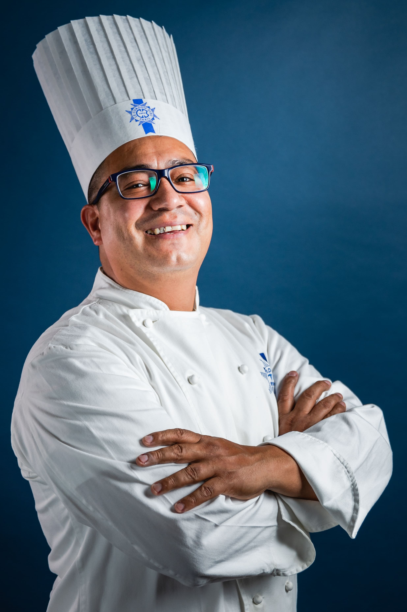
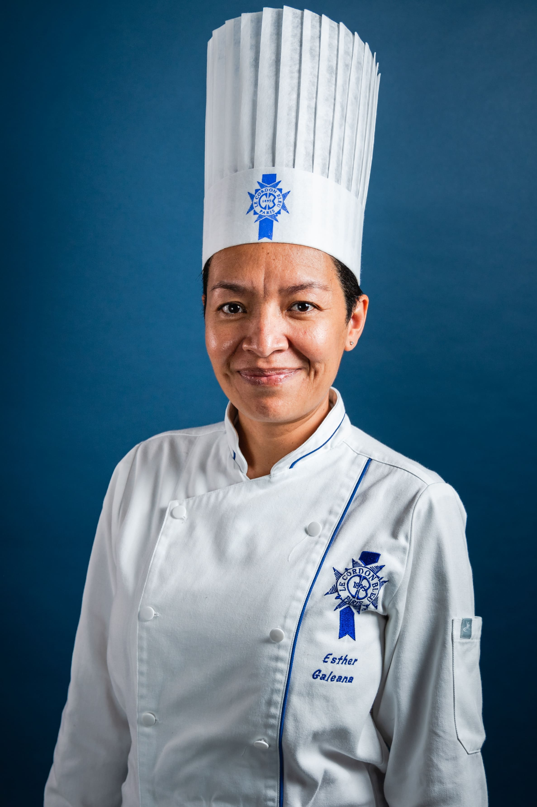
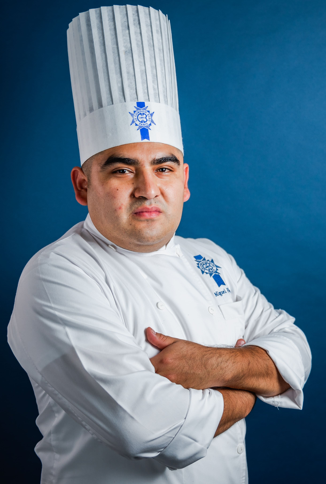

Misión
Ofrecer a cada cliente una experiencia auténtica de la carne peruana, con ingredientes frescos, sabores tradicionales y una atención que haga sentir a todos como en casa.
Todo comenzó en 1985, cuando don Carlos Quispe montó un pequeño puesto de anticuchos en el jirón Quilca, en el corazón del Centro de Lima. Con una parrilla artesanal, carbón de calidad y una receta familiar heredada de su madre, rápidamente se ganó el cariño del barrio.
Con los años, lo que fue un humilde carrito se convirtió en un restaurante que hoy recibe a cientos de comensales cada semana. Aunque crecimos, nunca cambiamos lo esencial: la misma receta, el mismo carbón, el mismo amor por la buena cocina peruana.
Ofrecer a cada cliente una experiencia auténtica de la carne peruana, con ingredientes frescos, sabores tradicionales y una atención que haga sentir a todos como en casa.
Ser el referente de anticuchos y parrilla criolla en Lima, preservando las tradiciones culinarias del Perú y llevándolas a nuevas generaciones sin perder su esencia.
Respetamos las recetas de siempre y los métodos artesanales que dan vida a cada plato.
Seleccionamos los mejores insumos del mercado local para garantizar frescura y sabor en cada bocado.
Tratamos a cada cliente como un invitado especial, con trato cercano y atención genuina.
Somos orgullo peruano. Cada plato que servimos es un homenaje a nuestra cultura y gastronomía.

Fundador
Más de 40 años encendiendo parrillas y preservando el sabor auténtico del anticucho limeño. Para don Carlos, cocinar es un acto de amor.

Chef Principal
Hija del fundador y alma de la cocina actual. Lucía estudió gastronomía en Le Cordon Bleu Lima y fusiona técnica moderna con las recetas de su padre.

Maestro Parrillero
Con 15 años en la parrilla, Marco conoce cada corte y cada punto de cocción. Su secreto: buen carbón, buen ojo y mucha paciencia.
Nuestra marinada de ají panca tiene más de 40 años de historia y nunca ha cambiado.
Usamos exclusivamente carbón de quebracho para lograr ese aroma y sabor inigualable a brasa.
Compramos en el mercado local cada mañana para asegurar la frescura de todos nuestros platos.
Un espacio acogedor donde caben desde parejas hasta grupos grandes. Todos son bienvenidos.
📍 Av. La Mar 450, Miraflores, Lima, Perú
✉️ contacto@blackangushouse.pe
Facebook: facebook.com/blackangushause
Instagram: instagram.com/blackangushause
Twitter: twitter.com/blackangushause
| Día | Horario |
|---|---|
| Lunes a viernes | 12:00 pm – 10:00 pm |
| Sábados | 12:00 pm – 11:00 pm |
| Domingos | 12:00 pm – 9:00 pm |